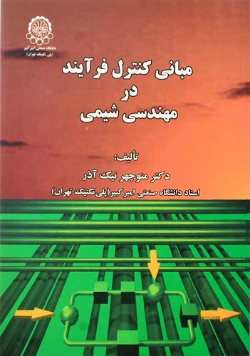
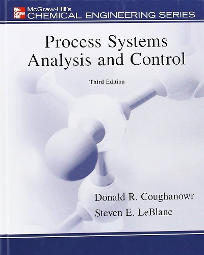

مبانی کنترل فرآیند در مهندسی شیمی
دکتر منوچهر نیک آذر

کتاب مبانی کنترل فرآیند در مهندسی شیمی نیک آذر مناسب تدریس در سطح کارشناسی مهندسی شیمی و رشتههای مرتبط مانند مهندسی پلیمر، صنایع غذایی و .. میباشد. این کتاب با بررسی نقاط ضعف دانشجویان در مباحث مختلف کنترل یک سری ویژگی را برای فصلها ایجاد کرده است.
به طور مثال: در این کتاب اصول ریاضی مباحث کنترل تا حد امکان بررسی شده است، بطوری که خواننده بتواند از نظر ریاضی قادر به تجزیه و تحلیل روشهای ارائه شده باشد. مثالها و تمرین های زیادی در متن کتاب گنجانده شده و حتی برخی از مفاهیم فصلها در قالب مثال در اختیار دانشجویان قرار گرفته است.
کتاب مبانی کنترل فرآیند در مهندسی شیمی نیک آذر از پنج بخش عمده تشکیل شده است:
1- مقدمات ریاضی (فصل 1)
2- تجزیه و تحلیل و مدلسازی ریاضی فرآیندهای خطی (فصل 2 و 3 و 4)
3- سخت افزار و عملکرد (فصل 5 و 6 و 7)
4- پایداری (فصل 8و9)
5- بررسی فرکانسی سیستمها (فصل 10)
برای مطالعه موثر کتاب مبانی کنترل فرآیند در مهندسی شیمی نیک آذر توصیه میشود تا خوانندگان در هر فصل، مباحث ریاضی عنوان شده را به دقت پیگیری نموده و مثالها و تمرینهای داخل فصل را شخصا حل نمایند. این مثالها و تمرینها با دقت فراوان طراحی گشته و هر کدام شامل نکات خاص مطرح شده در همان بخش میباشد. این کتاب جزء بهترین کتاب های دانشگاهی رشته مهندسی شیمی میباشد.
کتاب دوم

Process Systems Analysis and Control, Third Edition retains the clarity of presentation for which this book is well known. It is an ideal teaching and learning tool for a semester-long undergraduate chemical engineering course in process dynamics and control. It avoids the encyclopedic approach of many other texts on this topic. Computer examples using MATLAB and Simulink have been introduced throughout the book to supplement and enhance standard hand-solved examples. These packages allow the easy construction of block diagrams and quick analysis of control concepts to enable the student to explore ''what-if'' type problems that would be much more difficult and time consuming by hand. New homework problems have been added to each chapter.